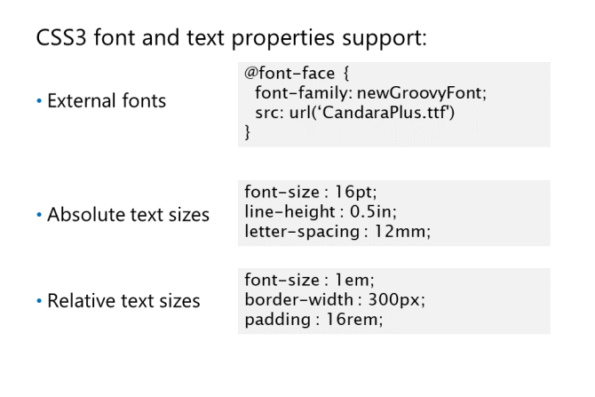

Czcionki i ich rozmiary
@font-face - do pobierania czcionek na komputer użytkownika
właściwości:
font-family ustawia nazwę tej czcionki
src określa adres URL, z którego ma zostać pobrany plik czcionek, oraz typ pobieranego pliku czcionek.
font-stretch określa, jak czcionka jest condensed or expanded
font-style określa, czy czcionka jest italicized(pochylona), oblique(ukośna), or normal.
font-weight określa grubość czcionki; bold, normal, or a value between 100 and 900
unicode-range określa zakres znaków Unicode obsługiwanych przez czcionkę.
Wymagane są tylko właściwości font-family i src
Kilka wariantów jednej czcionki:
Chociaż większość przeglądarek internetowych obsługuje regułę @font-face, nie wszystkie obsługują
te same formaty czcionek. Do pełnej obsługi potrzebujesz czterech formatów plików czcionek (embedded-opentype,
woff, truetype i svg). Poniższy przykład pokazuje, jak pobrać pliki czcionek
obsługuje te formaty:
rozmiary czcionek
Najczęściej stosowanymi jednostkami dla tej właściwości są points do wydrukowania
i piksele dla arkuszy stylów ekranu. Jednak CSS3 definiuje kilka dodatkowych jednostek
rozmiaru, które można zastosować do boxes, columns, and images, and do pozycjonowania tych elementów.
sześć jednostek pomiaru bezwzględnego:
Centimeters.
Millimeters (mm): 10 millimeters = 1 centimeter.
Inches (in): 1 inch = 2.54 centimeters.
Picas (pc): 1 pica = 12 points = 1/6th of an inch.
Points (pt): 1 point = 1/72nd of an inch.
Pixels (px): 1 pixel = 1/96th of an inch.
siedem jednostek pomiaru względnego:
Cztery są „font-relative”:
em: 1em = bieżący rozmiar czcionki bieżącego elementu.
ex: 1ex = wysokość of the font's lowercase x-height, or 0.5 em if not calculable.
ch: 1ch = szerokość znaku 0 (zero) czcionki.
rem: 1rem = rozmiar czcionki zdefiniowanej w elemencie HTML (domyślnie 16 pikseli)
Pozostałe trzy są „viewport-relative". Oznacza to, że są one względne w stosunku do wielkości obiektu okna przeglądarki
vw: 1vw = 1% of the width of the viewport.
vh: 1vh = 1% of the height of the viewport.
vmin: vmin = the smaller of vh and vw.
Możesz także użyć funkcji calc() do obliczenia pomiaru w czasie wykonywania.
img {
max-height: calc(100vh - 5px);
max-width: calc(100vw - 5px);
}
W takim przypadku wysokość i szerokość obrazu jest ustawiona na maksymalną wysokość okna przeglądarki i
szerokość minus 5px. Dzięki temu zawsze możesz zobaczyć pełny obraz w przeglądarce.